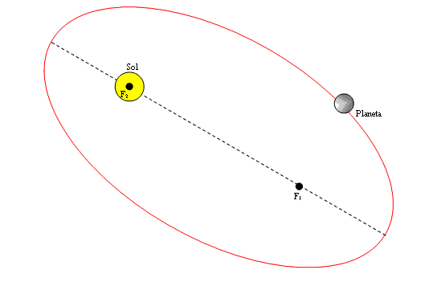
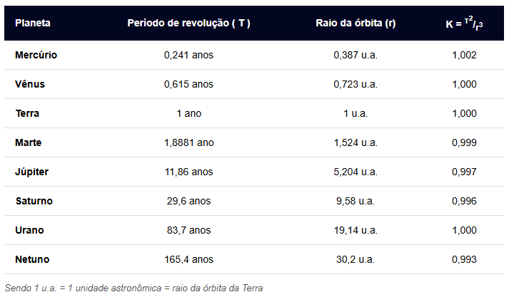

Movimento Orbital
O movimento orbital ocorre quando um objeto se desloca no espaço sob a influência exclusiva da força gravitacional de outro corpo massivo, resultando em uma trajetória contínua e cíclica. Esse fenômeno é o que mantém planetas girando ao redor do Sol, satélites artificiais operando na altitude correta e a Lua vinculada à Terra.
Como funciona:
A dinâmica de uma órbita baseia-se no equilíbrio perfeito entre duas forças principais
Velocidade Tangencial (Inércia): O desejo do objeto de continuar movendo-se para a frente em linha reta.
Atração Gravitacional: A força central que puxa o objeto em direção ao corpo de maior massa.
Quando combinadas de forma estável, o objeto entra em um estado de queda livre permanente. Ele cai constantemente em direção ao corpo central, mas sua velocidade horizontal é tão alta que a curvatura da sua queda acompanha exatamente a curvatura do planeta ou estrela abaixo, impedindo-o de colidir com a superfície.
Leis e Variáveis Fundamentais:
O movimento orbital é regido pelas Leis de Kepler e pela Lei da Gravitação Universal de Isaac Newton. Os conceitos mais importantes calculados na física orbital são:
Velocidade Orbital (v): É a velocidade necessária para manter a órbita estável. Ela independe da massa do objeto menor que está orbitando; depende apenas da massa do corpo central (M) e da distância até o centro dele (r), calculada pela fórmula:
Período Orbital (T): O tempo total que o corpo leva para completar uma volta inteira (translação). Pela Terceira Lei de Kepler, quanto maior a distância do corpo central, maior será o período orbital.
Forma da Órbita: Ao contrário do que muitos pensam, a maioria das órbitas não é um círculo perfeito, mas sim uma elipse (uma forma ovalada). O nível de achatamento dessa elipse é chamado de excentricidade.
Tabela do Tempo de Translação (T) e Raio Médio de Órbita (r) dos Planetas do Sistema Solar:
